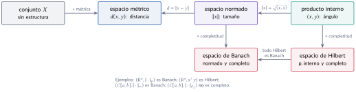
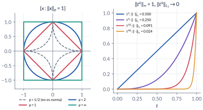
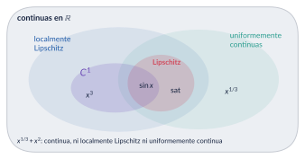
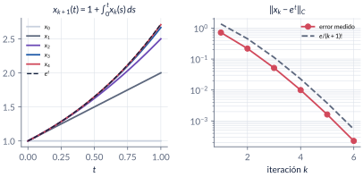
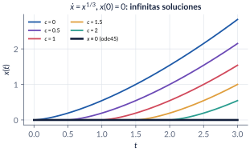
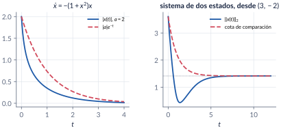

3. Fundamentos matemáticos
Semanas 3–4 · cuatro clases
Antes de hablar de estabilidad hay que saber medir: la distancia entre dos estados, el tamaño de una señal, la pendiente máxima de un campo vectorial. Esta parte arma esas herramientas (métricas, normas, producto interno, completitud, condición de Lipschitz) y las usa para responder la pregunta que todo lo demás da por sentada: ¿la ecuación \(\dot x=f(t,x)\) tiene una solución, una sola, y para todo tiempo? La respuesta es “no siempre”, y los contraejemplos (no unicidad, escape en tiempo finito) son tan importantes como el teorema.
Al terminar esta parte usted podrá
- Decir qué estructura tiene un espacio (métrica, norma, producto interno, completitud) y qué preguntas permite responder cada una.
- Calcular normas de vectores, de señales y de matrices, y usar la equivalencia de normas en \(\R^n\) sin extenderla a espacios de funciones.
- Clasificar un campo vectorial como continuo, \(\Cont1\), localmente Lipschitz, Lipschitz o globalmente Lipschitz, y calcular una constante de Lipschitz con el jacobiano.
- Enunciar y demostrar el teorema de existencia y unicidad local, y decir qué hipótesis falla en cada contraejemplo (no unicidad, escape en tiempo finito).
- Acotar soluciones que no se pueden calcular con la desigualdad de Gronwall–Bellman y el lema de comparación.
Ruta de las clases
| Clase | Qué se ve | Capítulo | Scripts |
|---|---|---|---|
| 1 | Espacio = conjunto + estructura. Métricas, normas de vectores y de señales, equivalencia de normas | §3.1–3.3 | C3_Ej1, C3_Ej2 |
| 2 | Normas inducidas de matrices, producto interno, Cauchy–Schwarz, espacios completos, conjuntos en \(\R^n\) | §3.3–3.6 | C3_Ej3, C3_Ej4 |
| 3 | Jerarquía de regularidad, condición de Lipschitz, existencia y unicidad local (prueba con contracción) | §3.7–3.9 | C3_Ej5, C3_Ej6, C3_Ej7 |
| 4 | Existencia global, escape en tiempo finito, Gronwall–Bellman, dependencia de condiciones iniciales, lema de comparación | §3.9–3.10 | C3_Ej8, C3_Ej9, C3_Ej10 |
Lo esencial, en una página

Normas (Khalil, §A.1)
Una norma en un espacio vectorial \(X\) es una función \(\norm{\cdot}:X\to\Rp\) con \(\norm x=0\iff x=0\), \(\norm{\alpha x}=\abs\alpha\norm x\) y \(\norm{x+y}\le\norm x+\norm y\). En \(\R^n\), \(\norm x_p=\bigl(\sum_i\abs{x_i}^p\bigr)^{1/p}\) para \(1\le p<\infty\) y \(\norm x_\infty=\max_i\abs{x_i}\). Todas las normas de \(\R^n\) son equivalentes: \(c_1\norm x_a\le\norm x_b\le c_2\norm x_a\). La norma inducida de una matriz es \(\norm A=\max_{\norm x=1}\norm{Ax}\); en particular \(\norm A_2=\sqrt{\lmax(A\T A)}\).

Trampa: la equivalencia de normas es un privilegio de \(\R^n\)
“Todas las normas son equivalentes; si una señal es pequeña en \(\mathcal{L}_1\), es pequeña en la norma del máximo.” Falso con funciones: \(f_k(t)=t^k\) en \(C[0,1]\) tiene \(\norm{f_k}_\infty=1\) y \(\norm{f_k}_{\mathcal{L}_1}=1/(k+1)\to0\). Con señales hay que decir en qué norma es pequeña una señal.
Trampa: la norma 2 no es el mayor valor propio
Para \(A=\begin{bmatrix}1&2\\-3&4\end{bmatrix}\), el radio espectral es \(\sqrt{10}\approx3.16\), pero \(\norm A_2=\sqrt{15+5\sqrt5}\approx5.12\). Lo correcto: \(\norm A_2=\sqrt{\lmax(A\T A)}\), y solo coincide con \(\max\abs{\lambda_i}\) si \(A\) es simétrica (o normal).

Condición de Lipschitz (Khalil, §3.1)
\(f\) es Lipschitz en \(W\) si \(\norm{f(t,x)-f(t,y)}\le L\norm{x-y}\) para todo \(x,y\in W\); localmente Lipschitz si cada punto tiene una vecindad donde lo es, y globalmente Lipschitz si \(W=\R^n\). Si \(f\in\Cont1\) y \(W\) es convexo y compacto, \(L=\max_{x\in W}\norm{\jac fx}\) sirve. Ejemplos: \(x^3\) es localmente pero no globalmente Lipschitz; \(\sat(x)\) es globalmente Lipschitz sin ser \(\Cont1\); \(x^{1/3}\) no es Lipschitz en ninguna vecindad de \(0\).
Existencia y unicidad local (Khalil, Teorema 3.1)
Si \(f(t,x)\) es continua a trozos en \(t\) y Lipschitz en \(x\) en la bola \(\{\norm{x-x_0}\le r\}\) para \(t\in[t_0,t_1]\), entonces \(\dot x=f(t,x)\), \(x(t_0)=x_0\) tiene una única solución en \([t_0,t_0+\delta]\) para algún \(\delta>0\). La prueba: el operador de Picard \((Px)(t)=x_0+\int_{t_0}^tf(s,x(s))\dif s\) es una contracción en un espacio de Banach, y la contracción tiene un único punto fijo.


ode45 devuelve \(x\equiv0\) sin avisar que hay otras.Trampa: el simulador no detecta la no unicidad
“Simulé \(\dot x=x^{1/3}\) desde \(x(0)=0\) con ode45 y obtuve \(x(t)\equiv0\); la solución es única.” El integrador se queda en una rama; desde \(x(0)=10^{-12}\) sigue la otra y llega a \(2\sqrt2\approx2.83\) en \(t=3\). La unicidad es una propiedad de \(f\) y se verifica con Lipschitz, no con una simulación.
Gronwall–Bellman y comparación
Si \(y(t)\le\lambda_0+\int_a^t\mu_0\,y(s)\dif s\) con \(\mu_0\ge0\), entonces \(y(t)\le\lambda_0e^{\mu_0(t-a)}\). De ahí sale la dependencia continua de las condiciones iniciales: \(\norm{x(t)-y(t)}\le\norm{x_0-y_0}e^{L(t-t_0)}\). El lema de comparación hace lo mismo con una ecuación escalar: si \(\dot v\le f(t,v)\) y \(\dot u=f(t,u)\) con \(v(t_0)\le u(t_0)\), entonces \(v(t)\le u(t)\). Sirve para acotar soluciones que no se pueden calcular.

Explorador interactivo
Tres pestañas con los ejemplos del capítulo. Todo se calcula en su navegador (los mismos modelos de C3_Ej2, C3_Ej5 y C3_Ej7).
Retos con el explorador
- Normas-p: baje \(p\) por debajo de \(1\). ¿Qué propiedad de norma deja de cumplirse? Mírelo en la forma de la “bola”.
- Lipschitz: con \(x^3\), agrande el intervalo. ¿Qué le pasa a \(L\)? Con \(x^{1/3}\), ponga el vértice en \(0\) y achique el intervalo: ¿existe un cono que contenga la gráfica?
- Picard: con \(\dot x=x^2\), \(x(0)=1\), aumente \(T\) hasta \(1\). ¿Qué pasa con las iteraciones cerca de \(t=1\)? Compare con el \(\delta=0.207\) que garantiza el teorema.
- Picard: con \(\dot x=-x^3\) y \(x(0)=2\) la solución existe para todo \(t\ge0\). ¿Por qué divergen las iteraciones en \([0,3]\)?
Códigos de esta parte
Los bloques salen directamente de los archivos del repositorio. Ejecute antes iniciarCurso. verificarCap03 comprueba los números del capítulo (33/33).
Tres métricas para los mismos dos puntos (§3.2).
x = [1; 1]; y = [4; 3];
d1 = sum(abs(x - y)); % Manhattan
d2 = sqrt(sum((x - y).^2)); % euclidiana
dinf = max(abs(x - y)); % máxima componente
fprintf('d1 = %g, d2 = %.4f, d_inf = %g\n', d1, d2, dinf);Distancia entre señales (§3.2).
t = linspace(0, 1, 200001);
f = sin(2*pi*t); g = t;
d1f = trapz(t, abs(f - g)); % área entre las curvas
[dinff, k] = max(abs(f - g)); % mayor separación vertical
fprintf('funciones: d1 = %.4f, d_inf = %.4f (en t = %.4f)\n', d1f, dinff, t(k));Equivalencia de normas en \(\R^n\) (§3.3).
n = 5; X = randn(n, 20000);
r12 = vecnorm(X, 1) ./ vecnorm(X, 2); % debe estar en [1, sqrt(n)]
r2i = vecnorm(X, 2) ./ vecnorm(X, Inf); % debe estar en [1, sqrt(n)]
fprintf('n = %d: ||x||_1/||x||_2 en [%.3f, %.3f]; ||x||_2/||x||_inf en [%.3f, %.3f]; sqrt(n) = %.3f\n', ...
n, min(r12), max(r12), min(r2i), max(r2i), sqrt(n));La equivalencia falla con funciones (§3.3).
t = linspace(0, 1, 100001);
for k = [1 5 20 100]
fk = t.^k;
fprintf('k = %3d: ||f_k||_inf = %.3f, ||f_k||_L1 = %.4f, ||f_k||_L2 = %.4f\n', ...
k, max(abs(fk)), trapz(t, abs(fk)), sqrt(trapz(t, fk.^2)));
endNormas inducidas (§3.3).
A = [1 2; -3 4];
n1 = max(sum(abs(A), 1)); % máxima suma por columnas
ninf = max(sum(abs(A), 2)); % máxima suma por filas
n2 = sqrt(max(eig(A.'*A))); % raíz del mayor valor propio de A'A
fprintf('||A||_1 = %g (%g), ||A||_inf = %g (%g), ||A||_2 = %.4f (%.4f)\n', ...
n1, norm(A, 1), ninf, norm(A, inf), n2, norm(A, 2));
fprintf('||A||_2 <= sqrt(||A||_1 ||A||_inf) = %.4f\n', sqrt(n1*ninf));Norma 2 contra radio espectral (§3.3).
fprintf('radio espectral de A = %.4f <= ||A||_2 = %.4f\n', max(abs(eig(A))), n2);
N = [0 1; 0 0];
fprintf('N = [0 1; 0 0]: rho(N) = %g, ||N||_2 = %g\n', max(abs(eig(N))), norm(N));Una sucesión de Cauchy sin límite continuo (§3.5).
t = linspace(0, 1, 400001);
rampa = @(k) min(1, max(0, k*(t - 0.5))); % continua para todo k
escalon = double(t > 0.5); % el "límite": no es continuo
nL2 = @(h) sqrt(trapz(t, h.^2));
nInf = @(h) max(abs(h));
for k = [10 100 1000]
fprintf('k = %4d: ||f_k - escalón||_L2 = %.4f (1/sqrt(3k) = %.4f)\n', ...
k, nL2(rampa(k) - escalon), 1/sqrt(3*k));
end
fprintf('||f_10 - f_20||_L2 = %.4f, ||f_10 - f_20||_inf = %.4f\n', ...
nL2(rampa(10) - rampa(20)), nInf(rampa(10) - rampa(20)));Constantes de Lipschitz con secantes (§3.8).
pend = @(f, x, y) abs(f(x) - f(y)) ./ abs(x - y);
sat = @(x) min(1, max(-1, x));
for a = [1 10]
x = linspace(-a, a, 2001); [X, Y] = meshgrid(x); M = X ~= Y;
P = pend(@(s) s.^3, X(M), Y(M));
fprintf('x^3 en [-%g, %g]: mayor pendiente = %.2f (3a^2 = %g)\n', a, a, max(P), 3*a^2);
end
x = linspace(-5, 5, 2001); [X, Y] = meshgrid(x); M = X ~= Y;
fprintf('sat en [-5, 5]: mayor pendiente = %.4f\n', max(pend(sat, X(M), Y(M))));
for h = [1e-1 1e-3 1e-6]
fprintf('x^(1/3), secante entre 0 y %g: pendiente = %.1f\n', h, pend(@(s) nthroot(s, 3), h, 0));
endNo unicidad: la familia de soluciones de \(\dot x=x^{1/3}\) (§3.9).
xc = @(t, c) (t > c).*((2/3)*max(t - c, 0)).^(3/2);
t = linspace(0, 3, 3001);
for c = [0 1 2]
x = xc(t, c); dx = gradient(x, t);
res = max(abs(dx(t > c + 0.05) - nthroot(x(t > c + 0.05), 3)));
fprintf('c = %g: x(3) = %.4f, residuo de x'' - x^(1/3) = %.1e\n', c, x(end), res);
endIteraciones de Picard (§3.9).
t = linspace(0, 1, 10001); f = @(x) x; x0 = 1;
x = ones(size(t)); % x_0(t) = x0
for k = 1:6
x = x0 + cumtrapz(t, f(x)); % (P x)(t)
fprintf('iteración %d: error ||x_k - e^t||_C = %.4e\n', k, max(abs(x - exp(t))));
endEscape en tiempo finito (§3.9).
opc = odeset('RelTol', 1e-10, 'AbsTol', 1e-12);
[t1, X1] = ode45(@(t, x) x^2, [0 0.99], 1, opc);
fprintf('x'' = x^2: x(0.99) = %.4f (exacto 1/(1 - 0.99) = 100)\n', X1(end));
[t2, X2] = ode45(@(t, x) -x^3, [0 10], 2, opc);
fprintf('x'' = -x^3: x(10) = %.4f (exacto 2/sqrt(81) = %.4f)\n', X2(end), 2/9);Dependencia de las condiciones iniciales (§3.9).
opc = odeset('RelTol', 1e-10, 'AbsTol', 1e-12);
t = linspace(0, 5, 501);
[~, Y] = ode45(@(t, y) -y + 0.5*sin(y), t, 1, opc);
[~, Z] = ode45(@(t, z) -z + 0.5*sin(z) + 0.1*cos(t), t, 1.05, opc);
L = 1.5; gam = 0.05; mu = 0.1;
cota = gam*exp(L*t) + mu/L*(exp(L*t) - 1);
fprintf('max |y - z| = %.4f; cota en t = 5: %.1f\n', max(abs(Y - Z)), cota(end));Lema de comparación, caso vectorial (§3.10).
g = @(t, x) [-x(1) + 2*x(2)/(1 + x(2)^2); -x(2) + 2*x(1)/(1 + x(1)^2)];
x0 = [3; -2]; [t2, X2] = ode45(g, linspace(0, 20, 2001), x0, opc);
nx = vecnorm(X2.'); cota2 = exp(-t2.')*norm(x0) + sqrt(2)*(1 - exp(-t2.'));
fprintf('max(||x|| - cota) = %.3e; ||x(20)|| = %.4f; x(20) = (%.4f, %.4f)\n', ...
max(nx - cota2), nx(end), X2(end,1), X2(end,2));Videos
Los videos se generan con los scripts de la tabla (MATLAB, VideoWriter).
| Video | Qué muestra | Script |
|---|---|---|
| V3.1 · Picard | Las iteraciones se acercan a la solución en el intervalo del teorema y se separan fuera de él. | C3_Video_Picard.m |
| V3.2 · No unicidad | Desde \(x(0)=0\), la familia de soluciones de \(\dot x=x^{1/3}\) despega en distintos instantes. | C3_Video_NoUnicidad.m |
Problemas
Los problemas del capítulo (§3.12) tienen cada uno una trampa; las soluciones seleccionadas están en §3.13 y las respuestas a las pausas al final del capítulo.